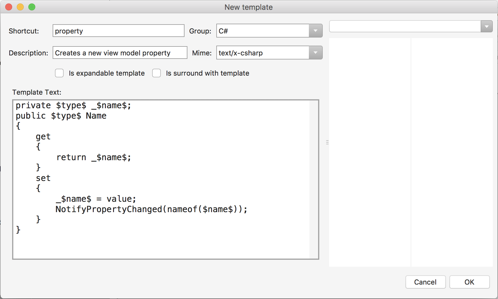

Code Snippets
Using Code Snippets to completely customise the code that MFractor generates
Introduction
As a software developer and MFractor user you'll likely find that MFractor, by default, doesn't quite generate code that's suited to your projects conventions.
Luckily, we can configure many of MFractor's code actions to use a custom code snippet when generating code!
Code Snippet Basics
MFractor uses the same conventions for code snippets as the Visual Studio family; you write a C# code block and replace areas that can be substituted with arguments enclosed in $.
For example, the following code snippet specifies the body for a property that calls the NotifyPropertyChanged method:
private $type$ _$name$;
public $type$ $name$
{
get
{
return _$name$;
}
set
{
_$name$ = value;
NotifyPropertyChanged(nameof($name$));
}
}
To control the type of the new property, we've replaced each spot where the property type would be used with the code snippet argument $type$. Likewise, we've done the same with the $name$ argument.
If the new property was a string with the name Message, MFractor would subsitute each occurance of $type$ with string and each occurance of $name$ with Message like so:
private string _Message;
public string Message
{
get
{
return _Message;
}
set
{
_Message = value;
NotifyPropertyChanged(nameof(Message));
}
}
When possible, MFractor's internal code generators use a code snippet to create code. These code snippets are exposed as configurable properties and are named Snippet.
To identify what you can
We can customise MFractor by providing code snippets through two sources: Visual Studio for Macs snippets and code snippets included within your project.
Using Visual Studio Macs Code Snippets
To enable MFractor to use a code snippet from Visual Studio Mac, we need to create a code snippet inside Visual Studio Mac and then link it up through an MFractor config file.
In the top menu bar, click on Visual Studio and then Preferences:

In the preferences window that opens, browse to Code Snippets... and then select Add:

This will open the New template wizard. For this code snippet we'll create a template for a new property that triggers a property changed method.
We'll set our code snippets name to notify_changed_property and enter the , define our code as below:

Lastly, we need to tell MFractor to use our code snippet when generating view model properties. We do this through an MFractor configuraiton file.
Create a file named app.mfc.xml in the root directory with the following content:
<mfractor>
<configure id="com.mfractor.code_gen.forms.csharp.view_model_property"
<property name="Snippet" source="ide" value="notify_changed_property"/>
</configure>
</mfractor>
This code connects the View Model Property Generator Snippet to the notify_changed_property code snippet in Visual Studio for Mac.
Using Project Code Snippets
MFractor can also use code snippets that are included within your project. This is useful as it allows you to include code snippets amongst you team
To do this, create a new folder named Snippets in the root of your project:

Next, create a new text file inside the Snippets folder named notify_changed_property.txt and enter the following content:
private $type$ _$name$;
public $type$ $name$
{
get
{
return _$name$;
}
set
{
_$name$ = value;
NotifyPropertyChanged(nameof($name$));
}
}
Lastly, we need to connect the View Model Property Generator Snippet to notify_changed_property.txt code snippet included in our project.
Create a file named app.mfc.xml in the root directory with the following content:
<mfractor>
<configure id="com.mfractor.code_gen.forms.csharp.view_model_property"
<property name="Snippet" source="file" value="Snippets/notify_changed_property.txt"/>
</configure>
</mfractor>